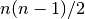
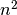

7. Introduction of Rule-based Modeling¶
E-Cell4 provides the rule-based modeling environment.
%matplotlib inline
from ecell4 import *
7.1. Species.count¶
First, Species provides a function count. Species.count
counts the number of matches between Species.
sp1 = Species("A(b^1).B(b^1)")
sp2 = Species("A(b^1).A(b^1)")
pttrn1 = Species("A")
print(pttrn1.count(sp1)) # => 1
print(pttrn1.count(sp2)) # => 2
1
2
In the above case, Species.count just returns the number of
UnitSpecies named A in Species regardless of its sites. To
specify the occupancy of a bond:
pttrn1 = Species("A(b)")
pttrn2 = Species("A(b^_)")
print(pttrn1.count(sp1)) # => 0
print(pttrn2.count(sp1)) # => 1
0
1
where A(b) suggests that bond b is empty, and A(b^_) does
that bond b is occupied. Underscore _ means wildcard here.
Similarly, you can also specify the state of sites.
sp1 = Species("A(b=u)")
pttrn1 = Species("A(b)")
pttrn2 = Species("A(b=u)")
print(pttrn1.count(sp1)) # => 1
print(pttrn2.count(sp1)) # => 1
1
1
A(b) says nothing about the state, but A(b=u) specifies both
state and bond. A(b=u) means that UnitSpecies named A has a
site named b which state is u and the bond is empty. Wildcard
_ is acceptable even in a state and name.
sp1 = Species("A(b=u^1).B(b=p^1)")
pttrn1 = Species("A(b=_^_)") # This is equivalent to `A(b^_)` here
pttrn2 = Species("_(b^_)")
print(pttrn1.count(sp1)) # => 1
print(pttrn2.count(sp1)) # => 2
1
2
Wildcard _ matches anything, and the pattern matched is not
consistent between wildcards even in the Species. On the other hand,
named wildcards, _1, _2 and so on, confer the consistency within
the match.
sp1 = Species("A(b^1).B(b^1)")
pttrn1 = Species("_._")
pttrn2 = Species("_1._1")
print(pttrn1.count(sp1)) # => 2
print(pttrn2.count(sp1)) # => 0
2
0
where the first pattern matches in two ways (A.B and B.A), but
the second matches nothing. Species.count always distinguishes the
order of UnitSpecies even in the symmetric case. Thus, _1._1
does not mean the number of dimers.
sp1 = Species("A(b^1).A(b^1)")
pttrn1 = Species("_1._1")
print(pttrn1.count(sp1)) # => 2
2
7.2. ReactionRule.count and generate¶
ReactionRule also has a function to count matches agaist the given
list of reactants.
rr1 = create_unimolecular_reaction_rule(Species("A(p=u)"), Species("A(p=p)"), 1.0)
sp1 = Species("A(b^1,p=u).B(b^1)")
print(rr1.count([sp1])) # => 1
1
ReactionRule.generate returns a list of ReactionRules
generated based on the matches.
print([rr.as_string() for rr in rr1.generate([sp1])])
[u'A(b^1,p=u).B(b^1)>A(b^1,p=p).B(b^1)|1']
ReactionRule.generate matters the order of Species in the given
list:
rr1 = create_binding_reaction_rule(Species("A(b)"), Species("B(b)"), Species("A(b^1).B(b^1)"), 1.0)
sp1 = Species("A(b)")
sp2 = Species("B(b)")
print([rr.as_string() for rr in rr1.generate([sp1, sp2])])
print([rr.as_string() for rr in rr1.generate([sp2, sp1])])
[u'A(b)+B(b)>A(b^1).B(b^1)|1']
[]
On the current implementation, ReactionRule.generate does not
always return a list of unique ReactionRules.
sp1 = Species("A(b,c^1).A(b,c^1)")
sp2 = Species("B(b,c^1).B(b,c^1)")
print(rr1.count([sp1, sp2])) # => 4
print([rr.as_string() for rr in rr1.generate([sp1, sp2])])
4
[u'A(b,c^1).A(b,c^1)+B(b,c^1).B(b,c^1)>A(b^1,c^2).A(b,c^2).B(b^1,c^3).B(b,c^3)|1', u'A(b,c^1).A(b,c^1)+B(b,c^1).B(b,c^1)>A(b^1,c^2).A(b,c^2).B(b,c^3).B(b^1,c^3)|1', u'A(b,c^1).A(b,c^1)+B(b,c^1).B(b,c^1)>A(b,c^1).A(b^2,c^1).B(b^2,c^3).B(b,c^3)|1', u'A(b,c^1).A(b,c^1)+B(b,c^1).B(b,c^1)>A(b,c^1).A(b^2,c^1).B(b,c^3).B(b^2,c^3)|1']
ReactionRules listed above look different, but all the products
suggest the same.
print(set([unique_serial(rr.products()[0]) for rr in rr1.generate([sp1, sp2])]))
set([u'A(b,c^1).A(b^2,c^1).B(b^2,c^3).B(b,c^3)'])
This is because these ReactionRules are generated based on the
diffent matches though they produces the same Species. Fot details,
See the section below.
Wildcard is also available in ReactionRule.
rr1 = create_unimolecular_reaction_rule(Species("A(p=u^_)"), Species("A(p=p^_)"), 1.0)
print([rr.as_string() for rr in rr1.generate([Species("A(p=u^1).B(p^1)")])])
[u'A(p=u^1).B(p^1)>A(p=p^1).B(p^1)|1']
Of course, wildcard is accepted as a name of UnitSpecies.
rr1 = create_unimolecular_reaction_rule(Species("_(p=u)"), Species("_(p=p)"), 1.0)
print([rr.as_string() for rr in rr1.generate([Species("A(p=u)")])])
print([rr.as_string() for rr in rr1.generate([Species("B(b^1,p=u).C(b^1,p=u)")])])
[u'A(p=u)>A(p=p)|1']
[u'B(b^1,p=u).C(b^1,p=u)>B(b^1,p=p).C(b^1,p=u)|1', u'B(b^1,p=u).C(b^1,p=u)>B(b^1,p=u).C(b^1,p=p)|1']
Named wildcards in a state is useful to specify the correspondence between sites.
rr1 = create_unbinding_reaction_rule(Species("AB(a=_1, b=_2)"), Species("B(b=_2)"), Species("A(a=_1)"), 1.0)
print([rr.as_string() for rr in rr1.generate([Species("AB(a=x, b=y)")])])
print([rr.as_string() for rr in rr1.generate([Species("AB(a=y, b=x)")])])
[u'AB(a=x,b=y)>B(b=y)+A(a=x)|1']
[u'AB(a=y,b=x)>B(b=x)+A(a=y)|1']
Nameless wildcard _ does not care about equality between matches.
Products are generated in order.
rr1 = create_binding_reaction_rule(Species("_(b)"), Species("_(b)"), Species("_(b^1)._(b^1)"), 1.0)
print(rr1.as_string())
print([rr.as_string() for rr in rr1.generate([Species("A(b)"), Species("A(b)")])])
print([rr.as_string() for rr in rr1.generate([Species("A(b)"), Species("B(b)")])])
_(b)+_(b)>_(b^1)._(b^1)|1
[u'A(b)+A(b)>A(b^1).A(b^1)|1']
[u'A(b)+B(b)>A(b^1).B(b^1)|1']
For its symmetry, the former case above is sometimes preffered to have a
half of the original kinetic rate. This is because the number of
combinations of molecules in the former is  even though
that in the later is , where both numbers of A and B
molecules are  . This is true for
. This is true for gillespie and ode.
However, in egfrd and spatiocyte, a kinetic rate is intrinsic
one, and not affected by the number of combinations. Thus, in E-Cell4,
no modification in the rate is done even for the case. See
Homodimerization and
Annihilation
for the difference between algorithms.
In constrast to nameless wildcard, named wildcard keeps its consistency,
and always suggests the same value in the ReactionRule.
rr1 = create_binding_reaction_rule(Species("_1(b)"), Species("_1(b)"), Species("_1(b^1)._1(b^1)"), 1.0)
print(rr1.as_string())
print([rr.as_string() for rr in rr1.generate([Species("A(b)"), Species("A(b)")])])
print([rr.as_string() for rr in rr1.generate([Species("A(b)"), Species("B(b)")])]) # => []
_1(b)+_1(b)>_1(b^1)._1(b^1)|1
[u'A(b)+A(b)>A(b^1).A(b^1)|1']
[]
Named wildcard is consistent even between UnitSpecies‘ and
site‘s names, technically.
rr1 = create_binding_reaction_rule(Species("A(b=_1)"), Species("_1(b)"), Species("A(b=_1^1)._1(b^1)"), 1.0)
print(rr1.as_string())
print([rr.as_string() for rr in rr1.generate([Species("A(b=B)"), Species("A(b)")])]) # => []
print([rr.as_string() for rr in rr1.generate([Species("A(b=B)"), Species("B(b)")])])
A(b=_1)+_1(b)>A(b=_1^1)._1(b^1)|1
[]
[u'A(b=B)+B(b)>A(b=B^1).B(b^1)|1']
7.3. NetfreeModel¶
NetfreeModel is a Model class for the rule-based modeling. The
interface of NetfreeModel is almost same with NetworkModel, but
takes into account rules and matches.
rr1 = create_binding_reaction_rule(Species("A(r)"), Species("A(l)"), Species("A(r^1).A(l^1)"), 1.0)
m1 = NetfreeModel()
m1.add_reaction_rule(rr1)
print(m1.num_reaction_rules())
m2 = NetworkModel()
m2.add_reaction_rule(rr1)
print(m2.num_reaction_rules())
1
1
Python notation explained in 2. How to Build a
Model is available too. To
get a model as NetfreeModel, set is_netfree True in
get_model:
with reaction_rules():
A(r) + A(l) > A(r^1).A(l^1) | 1.0
m1 = get_model(is_netfree=True)
print(repr(m1))
<ecell4.core.NetfreeModel object at 0x1076a7af8>
Model.query_reaction_rules returns a list of ReactionRules
agaist the given reactants. NetworkModel just returns
ReactionRules based on the equality of Species.
print(len(m2.query_reaction_rules(Species("A(r)"), Species("A(l)")))) # => 1
print(len(m2.query_reaction_rules(Species("A(l,r)"), Species("A(l,r)")))) # => 0
1
0
On the other hand, NetfreeModel genarates the list by applying the
stored ReactionRules in the rule-based way.
print(len(m1.query_reaction_rules(Species("A(r)"), Species("A(l)")))) # => 1
print(len(m1.query_reaction_rules(Species("A(l,r)"), Species("A(l,r)")))) # => 1
1
1
NetfreeModel does not cache generated objects. Thus,
NetfreeModel.query_reaction_rules is slow, but needs less memory.
print(m1.query_reaction_rules(Species("A(l,r)"), Species("A(l,r)"))[0].as_string())
print(m1.query_reaction_rules(Species("A(l,r^1).A(l^1,r)"), Species("A(l,r)"))[0].as_string())
print(m1.query_reaction_rules(Species("A(l,r^1).A(l^1,r)"), Species("A(l,r^1).A(l^1,r)"))[0].as_string())
A(l,r)+A(l,r)>A(l,r^1).A(l^1,r)|2
A(l,r^1).A(l^1,r)+A(l,r)>A(l,r^1).A(l^1,r^2).A(l^2,r)|2
A(l,r^1).A(l^1,r)+A(l,r^1).A(l^1,r)>A(l,r^1).A(l^1,r^2).A(l^2,r^3).A(l^3,r)|2
NetfreeModel.expand expands NetfreeModel to NetworkModel by
iteratively applying ReactionRules agaist the given seeds.
with reaction_rules():
_(b) + _(b) == _(b^1)._(b^1) | (1.0, 1.0)
m3 = get_model(True)
print(m3.num_reaction_rules())
m4 = m3.expand([Species("A(b)"), Species("B(b)")])
print(m4.num_reaction_rules())
print([rr.as_string() for rr in m4.reaction_rules()])
2
6
[u'A(b)+A(b)>A(b^1).A(b^1)|1', u'A(b)+B(b)>A(b^1).B(b^1)|1', u'B(b)+B(b)>B(b^1).B(b^1)|1', u'A(b^1).A(b^1)>A(b)+A(b)|1', u'A(b^1).B(b^1)>A(b)+B(b)|1', u'B(b^1).B(b^1)>B(b)+B(b)|1']
To avoid the infinite iteration for expansion, you can limit the maximum
number of iterations and of UnitSpecies in a Species.
m2 = m1.expand([Species("A(l, r)")], 100, {Species("A"): 4})
print(m2.num_reaction_rules()) # => 4
print([rr.as_string() for rr in m2.reaction_rules()])
4
[u'A(l,r)+A(l,r)>A(l,r^1).A(l^1,r)|2', u'A(l,r^1).A(l^1,r)+A(l,r^1).A(l^1,r)>A(l,r^1).A(l^1,r^2).A(l^2,r^3).A(l^3,r)|2', u'A(l,r)+A(l,r^1).A(l^1,r)>A(l,r^1).A(l^1,r^2).A(l^2,r)|2', u'A(l,r)+A(l,r^1).A(l^1,r^2).A(l^2,r)>A(l,r^1).A(l^1,r^2).A(l^2,r^3).A(l^3,r)|2']
7.4. Differences between Species, ReactionRule and NetfreeModel¶
The functions explained above is similar, but there are some differences in the criteria.
sp1 = Species("A(b^1).A(b^1)")
sp2 = Species("A(b)")
rr1 = create_unbinding_reaction_rule(sp1, sp2, sp2, 1.0)
print(sp1.count(sp1))
print([rr.as_string() for rr in rr1.generate([sp1])])
2
[u'A(b^1).A(b^1)>A(b)+A(b)|1']
Though Species.count suggests two different ways for matching
(left-right and right-left), ReactionRule.generate returns only one
ReactionRule because the order doesn’t affect the product.
sp1 = Species("A(b^1).B(b^1)")
rr1 = create_unbinding_reaction_rule(
sp1, Species("A(b)"), Species("B(b)"), 1.0)
sp2 = Species("A(b^1,c^2).A(b^3,c^2).B(b^1).B(b^3)")
print(sp1.count(sp2))
print([rr.as_string() for rr in rr1.generate([sp2])])
2
[u'A(b^1,c^2).A(b^3,c^2).B(b^1).B(b^3)>A(b,c^1).A(b^2,c^1).B(b^2)+B(b)|1', u'A(b^1,c^2).A(b^3,c^2).B(b^1).B(b^3)>A(b^1,c^2).A(b,c^2).B(b^1)+B(b)|1']
In this case, ReactionRule.generate works similarly with
Species.count. However, Netfree.query_reaction_rules returns
only one ReationRule with higher kinetic rate:
m1 = NetfreeModel()
m1.add_reaction_rule(rr1)
print([rr.as_string() for rr in m1.query_reaction_rules(sp2)])
[u'A(b^1,c^2).A(b^3,c^2).B(b^1).B(b^3)>A(b,c^1).A(b^2,c^1).B(b^2)+B(b)|2']
NetfreeModel.query_reaction_rules checks if each ReactionRule
generated is the same with others, and summalizes it if possible.
As explaned above, ReactionRule.generate matters the order of
Species, but Netfree.query_reaction_rules does not.
sp1 = Species("A(b)")
sp2 = Species("B(b)")
rr1 = create_binding_reaction_rule(sp1, sp2, Species("A(b^1).B(b^1)"), 1.0)
m1 = NetfreeModel()
m1.add_reaction_rule(rr1)
print([rr.as_string() for rr in rr1.generate([sp1, sp2])])
print([rr.as_string() for rr in m1.query_reaction_rules(sp1, sp2)])
print([rr.as_string() for rr in rr1.generate([sp2, sp1])]) # => []
print([rr.as_string() for rr in m1.query_reaction_rules(sp2, sp1)])
[u'A(b)+B(b)>A(b^1).B(b^1)|1']
[u'A(b)+B(b)>A(b^1).B(b^1)|1']
[]
[u'B(b)+A(b)>A(b^1).B(b^1)|1']
Named wildcards must be consistent in the context while nameless wildcards are not necessarily consistent.
sp1 = Species("_(b)")
sp2 = Species("_1(b)")
sp3 = Species("A(b)")
sp4 = Species("B(b)")
rr1 = create_binding_reaction_rule(sp1, sp1, Species("_(b^1)._(b^1)"), 1)
rr2 = create_binding_reaction_rule(sp2, sp2, Species("_1(b^1)._1(b^1)"), 1)
print(sp1.count(sp2)) # => 1
print(sp1.count(sp3)) # => 1
print(sp2.count(sp2)) # => 1
print(sp2.count(sp3)) # => 1
print([rr.as_string() for rr in rr1.generate([sp3, sp3])])
print([rr.as_string() for rr in rr1.generate([sp3, sp4])])
print([rr.as_string() for rr in rr2.generate([sp3, sp3])])
print([rr.as_string() for rr in rr2.generate([sp3, sp4])]) # => []
1
1
1
1
[u'A(b)+A(b)>A(b^1).A(b^1)|1']
[u'A(b)+B(b)>A(b^1).B(b^1)|1']
[u'A(b)+A(b)>A(b^1).A(b^1)|1']
[]